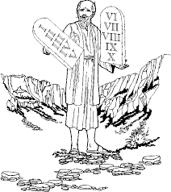

Ban đầu...

Adam và Eve

Tên của cuốn sách đầu tiên của Kinh Thánh, Sáng Thế Ký (Genesis), có nghĩa là bắt đầu. Hai chương đầu của sách Sáng Thế Ký (Genesis) nói cho chúng ta rằng Thiên Chúa đã tạo dựng vũ trụ: các ngôi sao, trái đất và tất cả các hành tinh khác, và nhất là sự sống hiện tại hoặc đã từng. Sáng tạo đặc biệt nhất của Thiên Chúa là con người: con người. Con người đặc biệt bởi vì con người được tạo ra theo hình ảnh riêng của Thiên Chúa. (Xem Genesis 1:26-27)
Chương thứ ba của Genesis kề về những câu chuyện tội lỗi vào thế gian như thế nào. Adam và Eve, người đàn ông đầu tiên và người phụ nữ đầu tiên, đã bị cám dỗ để tin rằng Thiên Chúa đã nói dối họ. Tin vào lời nói dối đó, họ sau đó bị thuyết phục rằng họ có thể thực sự TRỞ THÀNH giống như Thiên Chúa. Khi Thiên Chúa thấy rằng họ đã không vâng lời, Adam và Eve không còn thích mối quan hệ cởi mở với Thiên Chúa mà họ đã có trước đó nữa; tội lỗi đã ngăn cách họ với Thiên Chúa. Và do đó, điều này đã như vậy đối với mỗi người, ngoại trừ một người, đã từng sống kể từ đó đến giờ: tất cả chúng ta đều bị tội lỗi tách khỏi Thiên Chúa.
Chương bốn và năm của Genesis (Sáng Thế Ký) tiếp tục câu chuyện buồn của sự gian ác ngày càng tăng của con người. Thiên Chúa vẫn chưa ban lệnh của Ngài cho con người về cách sống đúng, và con người vẫn cư xử theo cách mà họ muốn. Tất cả các nền văn minh dường như có bạo lực và sự vô đạo đức ở tất cả các loại. Nhìn thấy tình trạng đáng buồn của tạo vật cao nhất của mình lamf Thiên Chúa hối tiếc vì đã cho con người khả năng có hành vi như vậy.

Noah
Khi Thiên Chúa nhìn xuống thế gian của Ngài mắc đầy tội lỗi, Ngài thấy một người đàn ông bước đi với Chúa: Noah. Thiên Chúa đã quyết định xóa sạch loài người và khởi đầu lại với Noah và gia đình ông. Chương sáu đến tám của Sáng Thế Ký (Genesis) nói về cách Thiên Chúa hủy diệt tất cả nhân loại với một trận lũ, chỉ để lại Noah cùng vợ của Noah và ba người con trai và vợ của họ.
Chương chín đến chương mười một của Genesis (Sáng Thế Ký) cho chúng ta câu chuyện về việc trái đất có đông người ở trở lại như thế nào sau cơn lũ gây ra bởi những người con trai của Noah là Shem, Ham và Japheth. Cuối chương mười một, chúng tôi được giới thiệu về một người đàn ông rất đặc biệt, một người đàn ông Thiên Chúa gọi là cha đẻ của một dân tộc cả riêng Ngài.

Abraham
Trong Sáng Thế Ký (Genesis), Kinh Thánh cho chúng ta biết một số người "đã đi với Thiên Chúa," giống như Noah. Đi với Thiên Chúa đòi hỏi đức tin: một niềm tin chắc chắn rằng Thiên Chúa sẽ làm những gì Ngài hứa sẽ làm. Noah phải niềm tin rất lớn để ông tin rằng Thiên Chúa sẽ hủy diệt toàn bộ dân số của trái đất với một trận hồng thủy và để ông làm theo hướng dẫn của Thiên Chúa là tạomột con thuyền (thuyền lớn), khi tất cả mọi người xung quanh ông đều chế nhạo ông khi anh làm việc này. Trong Sáng Thế Ký (Genesis) mười hai, chúng ta tìm hiểu về một người đàn ông mà Thiên Chúa đòi hỏi đức tin lớn: Abraham.

Thiên Chúa đã yêu cầu Abram làm một việc rất trọng đại (Thiên Chúa sau này đổi tên Abram thành Abraham): Ngài yêu cầu Abraham rời bỏ quê hương của mình và di chuyển đến một nơi mà ông chưa bao giờ nhìn thấy, nơi ông không biết ai. Đáp lại sự tuân lệnh của Abraham, Thiên Chúa đưa ra hai lời hứa với Abraham:
- rằng Ngài sẽ ban cho với Abraham và con cháu của ông vùng đất Canaan (mà ngày nay chúng ta gọi là Israel)
- rằng một quốc gia vĩ đại sẽ xuất hiện ở thời con cháu của Abraham
Trong tâm trí của Abraham, cả hai lời hứa này ắt hẳn là có vấn đề. Vùng đất Canaan đã thuộc về một số nhóm người khác, và Abraham và vợ ông không có con. Và vợ của Abraham, tên là Sarah, đã quá già nên không có con được. Tuy nhiên, Abraham đã có đức tin, và vì vậy ông và cả gia đình của ông đã khởi hành đi Canaan.
Nếu bạn đọc những câu chuyện của Abraham trong các chương 12-23 của Sáng Thế Ký (Genesis), bạn sẽ thấy rằng đức tin của Abraham là không hoàn hảo: ông đôi khi "tự chuốc lấy phiền toái", thay vì chờ Thiên Chúa và sự ấn định thời gian của Ngài. Tuy nhiên, chúng ta đọc trong Sáng Thế Ký 15:6, "Abram tin Thiên Chúa và ông tin rằng có Ngài là công bình."
Ngay cả khi điều gì đó không phải là dễ dàng, ngay cả khi chúng ta không thể nhìn thấy đường đi, Thiên Chúa đòi hỏi chúng ta phải có đức tin nơi Ngài.

Cũng như Thiên Chúa đã hứa, Sarah ĐÃ có một người con trai; bà và Abraham đặt tên là Isaac. Sarah vui mừng với việc có một đứa con, ngay cả trong lúc tuổi già.
Khi Isaac trưởng thành và lập gia đình, ông có hai người con trai, Jacob và Esau (Sáng Thế Ký 25:19-Sáng Thế Ký 30). Jacob có mười hai người con trai (bạn có thể nhìn thấy một danh sách tên của họ trong Sáng Thế Ký 35:23-26). Tên của những người con trai sẽ trở thành tên của mười hai bộ tộc của Israel. (Thiên Chúa thực ra đã đổi tên Jacob thành Israel--Sáng Thế Ký 35:10.) Thông qua mười hai người con trai này, Thiên Chúa đã thực hiện lời hứa của Ngài với Abraham là tạo nên một quốc gia vĩ đại của những người con của ông.
Moses
Một trong những người con trai của Jacob, tên là Joseph, đã đến Ai Cập và đã trở thành một vị quan lớn trong triều đình của các Pharaoh (bạn có thể đọc về điều này trong Sáng Thế Ký 37-50; đó là một câu chuyện dài, nhưng khá phiêu lưu). Cuối cùng, tất cả mười một của Joseph đều chuyển đến Ai Cập. Miễn là Joseph còn sống, gia đình của ông sống tốt nhờ kết nối của ông với Pharaoh.

Sau cái chết của Joseph, các thế hệ khác đã được sinh ra, và một Pharaoh mới lên nắm quyền nhưng không biết rằng Joseph đã được gia đình hoàng gia mến chuộng. Pharaoh mới này đã thấy người Do Thái (người Israel cũng đã được gọi là dân Do Thái hoặc người Do Thái) đã tăng lên rất nhiều về số lượng. Điều này làm cho vị Pharaoh này sợ rằng họ có thể chế ngự chính quyền của ông, vì vậy ông đã bắt tất cả những người Israel (Do Thái) làm nô lệ ở Ai Cập.

Trong Xuất Hành 02:23, Kinh Thánh kể cho chúng ta về việc người Do Thái phải chịu rất nhiều đau khổ khi làm nô lệ của Ai Cập. Họ kêu cầu Thiên Chúa cứu họ, và Thiên Chúa đã nghe thấy. Ngài đã chọn một người trong số những người Do Thái để giúp người Israel khỏi ách nô lệ. Tên của người đó là Moses.
Không giống như Abraham, người đã nghe theo lời kêu gọi của Thiên Chúa, lúc đầu Moses đã cố gắng làm cho Thiên Chúa dùng người khác (Xuất Hành 4:1-14).

Thiên Chúa chỉ cho Moses thấy rằng chỉ có Thiên Chúa, chứ không phải là Moses, có thể buộc Pharaoh trả tự do cho nô lệ người Do Thái. Moses sẽ chỉ là sứ giả của Thiên Chúa.
Tại Ai Cập, họ tôn thờ nhiều vị thánh — thần tượng — không phải là Thiên Chúa của Abraham, Isaac và Jacob. Khi Moses lần đầu tiếp cận Pharaoh (Xuất Hành 5), Pharaoh chế giễu: "Ai là Thiên Chúa mà tôi phải vâng lời?"
Moses trả lời Pharaoh với một yêu cầu thứ hai là Pharaoh giải phóng những nô lệ người Do Thái. Tuy nhiên lần này, Moses mang theo một cảnh báo từ Thiên Chúa: nếu Pharaoh không đồng ý với giải phóng người Israel, Thiên Chúa giáng một loạt chín bệnh dịch ở Ai Cập, tai họa hủy diệt, bệnh tật và bóng tối. Thật ngạc nhiên, ngay cả sau khi những ảnh hưởng khủng khiếp của tất cả các tai họa này, Pharaoh vẫn từ chối tin vào quyền năng của Thiên Chúa và vẫn không giải phóng những người Do Thái. (Xuất Hành 7:15-Xuất Hành 11)
Chỉ sau tai ương thứ mười (Xuất Hành 12) thì Pharaoh mới chịu đồng ý giải phóng nô lệ của Ai Cập. Người con trai đầu lòng của mỗi hộ gia đình Ai Cập sẽ bị giết. Tuy nhiên, Thiên Chúa i sẽ cứu những người con trai đầu lòng của người Do Thái. Ngài hướng dẫn họ chịu mất một con cừu và sơn máu của con cừu lên cửa nhà. Khi Thiên Chúa đến để giết những người con trai đầu lòng, Ngài sẽ "bỏ qua" những ngôi nhà của tất cả người Do Thái đã theo hướng dẫn của Ngài sơn máu của con cừu lên cửa nhà.
Cho đến ngày nay, người Do Thái vẫn cử hành lễ Vượt Qua (Passover) mỗi năm để tưởng niệm phép lạ đã giúp giải thoát họ khỏi ách nô lệ.

Quân đội Ai Cập đuổi người Do Thái tới Biển Đỏ, nghĩ rằng người Do Thái đã bị mắc kẹt ở biển (Xuất Hành 14). người Do Thái bắt đầu hoảng sợ, nhưng Moses đã bảo họ đặt niềm tin vào Thiên Chúa. Thiên Chúa ra lệnh cho Moses nâng cao cây gậy trên mặt nước. Thật kỳ diệu, các vùng nước của Biển Đỏ tách ra, tạo ra một con đường đất khô cho phép họ vượt sang phía bên kia. Khi quân đội của Pharaoh cố gắng vượt qua cùng con đường đó, nước biển đã ập xuống từ hai phía, nhấn chìm tất cả bọn họ. Cuối cùng, người dân Israel đã ra khỏi Ai Cập và thoát khỏi cảnh nô lệ.
Và, cũng như Thiên Chúa đã nói với Moses khi Ngài gọi Moses lần đầu, chính là bàn tay quyền năng của Thiên Chúa thực hiện tất cả!
Mười Điều Răn
Khi chúng ta đọc trong câu chuyện về Đại Hồng thủy (Great Flood), Thiên Chúa vẫn chưa đưa ra luật của Ngài cho con người. Khi người Do Thái bắt đầu đến vùng đất mà Thiên Chúa đã hứa với Abraham và con cháu của Abraham, Thiên Chúa hướng dẫn Moses để leo lên đỉnh Núi Sinai. Ở đó, có ngọn núi được khói bao phủ để che chở cho người dân với vinh quang lớn của Thiên Chúa, Moses nhận các điều răn của Thiên Chúa đối với người dân của Ngài (Xuất Hành 20: 1-17).

Người Do Thái đã không còn trong cảnh nô lệ ở Ai Cập, nhưng không có nghĩa là tất cả các khó khăn của họ đã qua. Câu chuyện về cuộc hành trình của họ đến vùng đất mà Thiên Chúa đã hứa với họ là một khoảng thời gian bốn mươi năm!
Đức tin của Israel thấp; họ thường nghi ngờ không biết Thiên Chúa có thực hiện điều đó cho họ hay không. Nhiều lần họ đã rất nản, họ đã nói chuyện về quay lại Ai Cập! Và, có lẽ điều tồi tệ nhất là họ thậm chí còn tạo ra những thần tượng để thờ phụng vì họ nghi ngờ Thiên Chúa rất nhiều.
Câu chuyện về cái chết của Moses được ghi trong chương thứ 34 của Đệ Nhị Luật (Deuteronomy). Trong sách Đệ Nhị Luật Thiên Chúa mở rộng các pháp luật mà Ngài đã cho dân của Ngài tại Núi Sinai. Ngài chỉ cho mọi người phải tiến hành ra sao với những người Do Thái đồng hương của họ và cách họ phải thờ phụng Thiên Chúa.